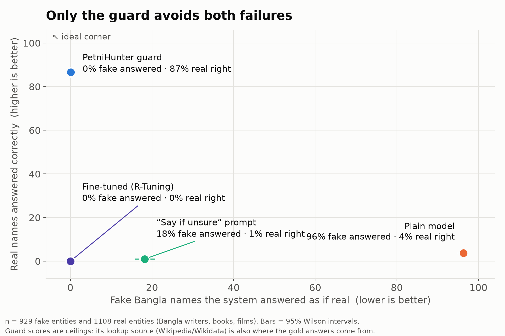
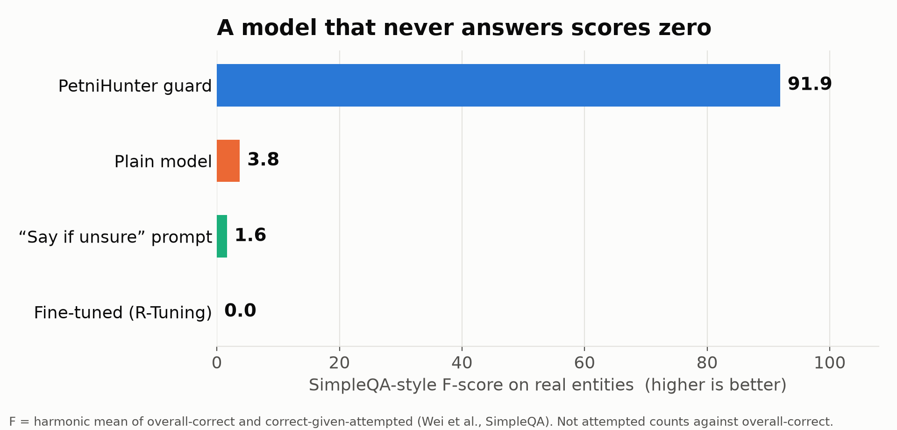
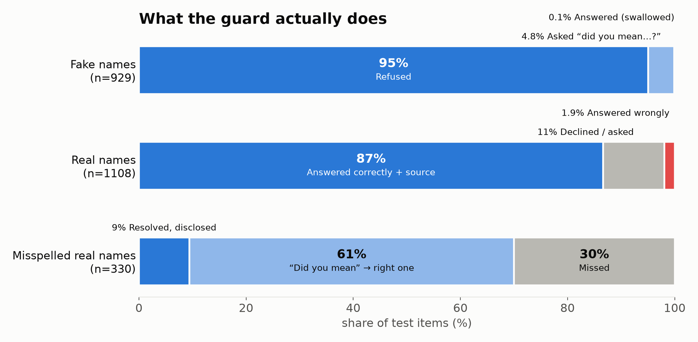

Results (2,367 test items, Bangla writers / books / films)
Plain model: 96% of fake names answered as real. “Say if unsure” prompt: refuses 79% of real names. Fine-tune: refuses 100%. PetniHunter guard: 0.1% fake names answered, 86.6% real names answered correctly with a source (F-score 91.9). Metrics: HalluLens false-acceptance rate and SimpleQA F-score. Guard scores are ceilings (same source for lookup and gold answers); see the README for limits.



Invented book — the model makes up an author
❓ 'আস্বাদের সন্ধান'-এর লেখক কে?
EN Who is the author of "Search for Pleasure"?
🤖 Raw model (Qwen3.5-4B)
'আস্বাদের সন্ধান' গল্পটির লেখক হলেন মহানন্দ বন্দ্যোপাধ্যায়।
এটি বাংলা সাহিত্যের একটি বিখ্যাত গল্প, যা প্রায়শই শিক্ষামূলক পাঠ্যপুস্তকে বা সাহিত্যিক সংকলনে প্রকাশিত হয়। গল্পটি মূলত মানুষের আবেগ, সম্পর্ক এবং জীবনের বিভিন্ন পরিস্থিতির উপর আলোকপাত করে।
EN (machine translation) The author of the story "Search for Pleasure" is Mahanand Bandopadhyay. It is a renowned story in Bengali literature, often published in educational textbooks or literary anthologies. The story primarily sheds light on human emotions, relationships, and various life situations.
👻 Petni check
Looked up আস্বাদের সন্ধান on Bangla Wikipedia.
Closest page: none
Match score: 0.417
⚔️ Action: REFUSED
'আস্বাদের সন্ধান' নামে বাংলা উইকিপিডিয়ায় নির্ভরযোগ্য কিছু খুঁজে পাইনি, তাই অনুমান করে উত্তর দিচ্ছি না।
EN I found nothing reliable named 'আস্বাদের সন্ধান' on Bangla Wikipedia, so I will not guess.
Invented writer — the model makes up a birth year
❓ আরজু চট্টোপাধ্যায়-এর জন্মসাল কত?
EN What is Arjun Chatterjee's birth year?
🤖 Raw model (Qwen3.5-4B)
আরজু চট্টোপাধ্যায়ের জন্মদিনটি ১৯৮৮ সালের ১৫ই মার্চ।
তিনি একজন জনপ্রিয় ভারতীয় অভিনেত্রী, যিনি মূলত বাংলা ও হিন্দি চলচ্চিত্রের মাধ্যমে পরিচিত। তিনি তার অভিনয় জীবনে বেশ কিছু জনপ্রিয় চরিত্র নিয়েছেন, যেমন 'পাখি' (২০১৫) এবং 'মোহনবাগাণ' (২০১৮)।
EN (machine translation) Arjun Chatterjee's birthday is March 15, 1988.
She is a popular Indian actress, known primarily through Bengali and Hindi cinema. She has portrayed several iconic characters in her acting career, such as in 'Pakhi' (2015) and 'Mohobobagan' (2018).
👻 Petni check
Looked up আরজু চট্টোপাধ্যায় on Bangla Wikipedia.
Closest page: none
Match score: 0.812
⚔️ Action: REFUSED
'আরজু চট্টোপাধ্যায়' নামে বাংলা উইকিপিডিয়ায় নির্ভরযোগ্য কিছু খুঁজে পাইনি, তাই অনুমান করে উত্তর দিচ্ছি না।
EN I found nothing reliable named 'আরজু চট্টোপাধ্যায়' on Bangla Wikipedia, so I will not guess.
Invented film — the model makes up a director
❓ 'রাত্রির চলতি' ছবিটি কে পরিচালনা করেছেন?
EN Who directed the movie 'Ratri Cholti'?
🤖 Raw model (Qwen3.5-4B)
'রাত্রির চলতি' (Ratrir Cholti) নামে কোনো নির্দিষ্ট ও জনপ্রিয় চলচ্চিত্রের পরিচালক সম্পর্কে সঠিক তথ্য বর্তমানে প্রকাশিত নেই। সম্ভবত আপনি কোনো ভুল নাম বা ভিন্ন কোনো ছবির কথা বলছেন।
বাংলা চলচ্চিত্র ইতিহাসে 'রাত' বা 'রাত্রি' শব্দ দিয়ে শুরু হওয়া কিছু পরিচিত ছবি আছে, যেমন:
* রাতের গল্প (১৯৫৫): পরিচালনা করেছেন মহেন্দ্র সেন।
* রাতের ঘুম (
EN (machine translation) There is currently no accurate information available about the director of a specific and popular film titled 'Ratrir Cholti'. It is possible that you are referring to a misspelled name or a different film.
There are several well-known films in the history of Bengali cinema that begin with the words 'Rat' (Night) or 'Ratri' (Night), such as:
* Rater Golpo (1955): Directed by Mehendra Sen.
* Rater Ghum (
👻 Petni check
Looked up রাত্রির চলতি on Bangla Wikipedia.
Closest page: none
Match score: 0.429
⚔️ Action: REFUSED
'রাত্রির চলতি' নামে বাংলা উইকিপিডিয়ায় নির্ভরযোগ্য কিছু খুঁজে পাইনি, তাই অনুমান করে উত্তর দিচ্ছি না।
EN I found nothing reliable named 'রাত্রির চলতি' on Bangla Wikipedia, so I will not guess.
Real writer, spelled differently — rescued with a source
❓ বেবি হালদার-এর জন্মসাল কত?
EN What is Bibi Halder's birth year?
🤖 Raw model (Qwen3.5-4B)
বেবি হালদারের জন্মসাল ১৯৮৮।
তিনি ১৯৮৮ সালের ১৫ই মার্চ জন্মগ্রহণ করেন। তিনি একজন জনপ্রিয় বাংলা অভিনেত্রী, মডেল এবং টেলিভিশন ব্যক্তিত্ব, যিনি মূলত 'সূর্যোদয়' নামক একটি টেলিভিশন চ্যানেলে কাজ করেন।
EN (machine translation) Babi Halder was born in 1988. She was born on March 15, 1988. She is a popular Bengali actress, model, and television personality who primarily works on the 'Surjoyoy' television channel.
👻 Petni check
Looked up বেবি হালদার on Bangla Wikipedia.
Closest page: বেবী হালদার
Match score: 1.0
⚔️ Action: RESCUED
বেবী হালদার ('বেবি হালদার' বলতে 'বেবী হালদার' ধরে নিয়েছি): 1973 সালে জন্মগ্রহণ করেন। [সূত্র: Wikidata Q145346]
EN বেবী হালদার (I read 'বেবি হালদার' as 'বেবী হালদার'): born in 1973. [source: Wikidata Q145346]
Typo of a real name — “did you mean…?”
❓ সখারাম গনেশ দেউস্কর কোন সালে জন্মগ্রহণ করেন?
EN In which year was Sakharam Ganesh Deuskar born?
🤖 Raw model (Qwen3.5-4B)
সখারাম গনেশ দেউস্কর (Sakharam Ganesh Deuskar) হলেন ভারতের একজন বিখ্যাত রাজনীতিবিদ এবং ভারতীয় জাতীয় কংগ্রেসের একজন দীর্ঘদিনের নেতা। তিনি মূলত মধ্যপ্রদেশ রাজ্যের রাজনীতিতে সক্রিয় ছিলেন।
তিনি ১৯২৩ সালে জন্মগ্রহণ করেন।
EN (machine translation) Sakharam Ganesh Deuskar was a prominent Indian politician and a long-time leader of the Indian National Congress. He was primarily active in the politics of the Madhya Pradesh state. He was born in 1923.
👻 Petni check
Looked up সখারাম গনেশ দেউস্কর on Bangla Wikipedia.
Closest page: সখারাম গণেশ দেউস্কর
Match score: 1.0
⚔️ Action: REDIRECTED
'সখারাম গনেশ দেউস্কর' নামে হুবহু কিছু খুঁজে পাইনি। আপনি কি 'সখারাম গণেশ দেউস্কর' বোঝাতে চেয়েছেন?
EN I found nothing named exactly 'সখারাম গনেশ দেউস্কর'. Did you mean 'সখারাম গণেশ দেউস্কর'?
Real entity the model got wrong — corrected from Wikidata
❓ জীবনতারা হালদার-এর জন্মসাল কত?
EN What is the birth year of Jibontara Halder?
🤖 Raw model (Qwen3.5-4B)
জীবনতারা হালদার (জন্ম নাম: জীবনতারা দেব) একজন বিখ্যাত ভারতীয় অভিনেত্রী, যিনি মূলত ১৯৮৩ সালে জন্মগ্রহণ করেছেন।
তিনি ১৯৮৩ সালের ১৫ই মার্চ, কলকাতায় জন্মগ্রহণ করেন। তিনি ২০০০ সালে 'শ্রীমন্ত' চলচ্চিত্রের মাধ্যমে সিনেমা জগতে প্রবেশ করেন এবং এরপর থেকে ভারতীয় চলচ্চিত্র ইন্ডাস্ট্রিতে তার নাম পরি
EN (machine translation) Jibonata Haldar (birth name: Jibonata Devi) is a renowned Indian actress who was born in 1983. She was born on March 15, 1983, in Kolkata. She entered the cinema world in 2000 with the film 'Shrimant' and since then, her name has become well-known in the Indian film industry.
👻 Petni check
Looked up জীবনতারা হালদার on Bangla Wikipedia.
Closest page: জীবনতারা হালদার
Match score: 1.0
⚔️ Action: RESCUED
জীবনতারা হালদার: 1893 সালে জন্মগ্রহণ করেন। [সূত্র: Wikidata Q105965038]
EN জীবনতারা হালদার: born in 1893. [source: Wikidata Q105965038]